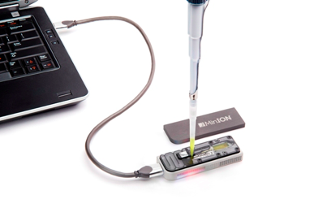
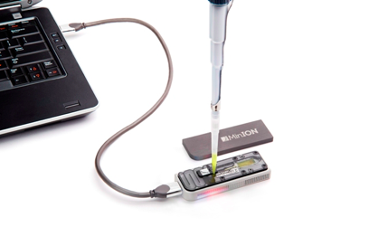

Principles and Applications of Modern DNA Sequencing
EEEB GU4055
Session 1: Introduction
Today's topics
1. Introductions
2. Syllabus
3. Class structure
4. Computational resources
Learning objectives in this courese
To understand that genomes are data -- a set of instructions, and a record of history -- and to learn to use this information to test hypotheses.

Learning genomics from the primary literature
We will read and discuss empirical papers and reviews of the application of genomics methods for studying evolution and medicine.
Learn genomics through hands-on computational exercises
We will use code exercises to see and touch real genomic data to understand how biological processes and information are translated and interpreted as data.
# simulate a chromosome from a coalescent tree_sequence
tree_sequence = ms.simulate(
sample_size=1000,
length=int(1e5),
Ne=int(1e5),
mutation_rate=1e-9,
recombination_rate=1e-10,
random_seed=10,
)
# calculate linkage disequilibrium across the chromosome
ldx = ms.LdCalculator(tree_sequence).get_r2_matrix()
Learn about modern genomics technologies
We will discuss state-of-the-art technologies. Why are these methods useful, what came before, and what is coming next? Why should you choose one method over another?
In summary: Learning objectives
Learn to design, conduct, and analyze genomic
experiments. By the end of class you should be able to:
- Describe the structure of genomes; what information can be extracted.
- Choose appropriate technologies for genomic experiments.
- Analyze genomic data using computational methods.
Class format: In each class we will
1. Discuss previous reading and review previous assignments.
2. Introduce new topics.
3. Assign readings and assignments on the new topic.
- Mon. assigned work load will be light, Wed. will be intensive.
- Assignments are due before the start of next class, else score=0.
Project proposal
Propose a novel use/question/investigation using a modern genomic
technology; or propose an idea for a new technology/method, how it
would work, and why it would be useful.
This activity will require synthesizing knowledge about technologies
we have learned, and about the data contained within genomes.
Field trip and report
Black Rock Forest Hands-on Portable Genomic Sequencing in the Field
 

4/17-4/18 (Fri-Sat) Let us know immediately if you cannot make it.
Grading
Assignments (50%)
Midterm (15%)
Participation/Quizzes (15%)
Project Proposal (5%)
Project Presentation (5%)
Final trip report (10%)
Our policy on working in groups
You can discuss the assignment with each other,
including on the course chatroom on Courseworks.
However, you should not post complete answers on
the chatroom, and you cannot work together in groups
to complete assignments or share answers.
We have office hours available between each class where
you should seek extra help with assignments.
Introduction to bash/jupyter/the-cloud
Throughout this course will assign online computational notebooks to complete between sessions. These are called jupyter notebooks, which combine text and code together into a single document. They are a great tool for teaching and for doing science.

Codio, binder, and cloud hosting
The focus of this class is on genomics. Coding and bioinformatics are
an integral part of genomics, and so we will use them as a tool to learn more about the subject. However, this is not a computer science course. We do not require you to have prior coding experience. We will not require you to install any software on your computer.
To make it as easy as possible to jump right into doing science we are hosting all of the assignments on cloud-based servers. This means you will be able to login to complete your assignments online without having to install anything on your computer.
You should have access to codio: https://codio.com
And we will also use a free alternative, binder: example
Introduction to the bash terminal
The system is composed of a hierarchical file system, just like the folder within folders in your own computer. There is a way of specifying the location of any file on your computer with text by describing its path.
# The root (top) of the entire filesystem (used for writing full paths).
$ /
# Here, in my current directory (used for writing relative paths).
$ ./
# Up one directory from my current directory (a relative path).
$ ../
Hierarchical file system
The beginning of the path starts at the root, which is represented by a forward slash (/). From there you can see file and folders of your system, as well as folders leading to your personal file. When you open a terminal you are located somewhere in this file system. You can ask where am I? What is here?

The bash command line
Bash is a language for interacting with your system from a terminal. From bash you can call a large number of software programs (which we will learn about) to accomplish a large number of tasks, including data analysis.
# the common syntax of bash commands
$ [program name] [-options] [target]
# an example with the program 'ls'
$ ls -l ./
# the same without using the optional flag -l
$ ls ./
# the same without the optional target (it uses the default target ./)
$ ls
Hierarchical file system
You should always know where you are in the filesystem. This is bioinformatics skill number one. You need to know where your data is located to anything with it.
# show the files in your current directory
$ ls -l
# show the files in a different location on the filesystem
$ ls -l /bin/
# move yourself to a new location. This becomes your new cur dir.
$ cd folder
# print the path to your current location
$ pwd
Learning bash command line tools
There are many great tutorials, and google always has an answer. If you have zero experience in using a terminal then you may want to complete the Linux Command Line Tutorial on Codio, listed under the Courses tab on the left.
Your assignment for Monday
You have several notebooks to complete and an assigned paper to read.